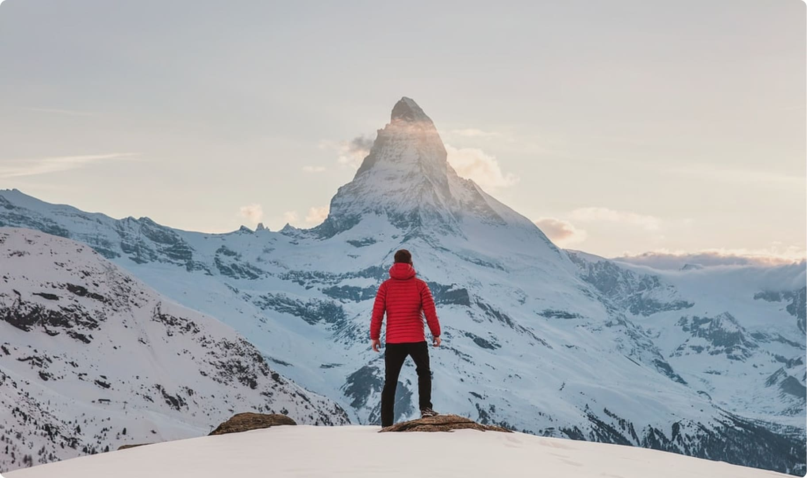
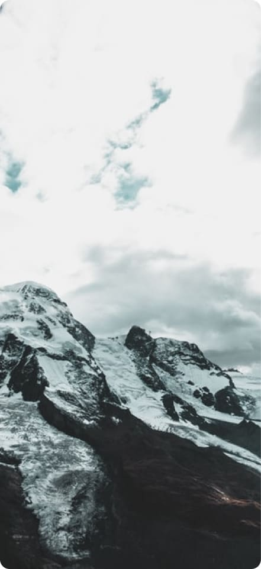
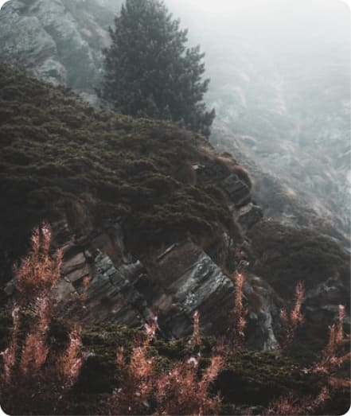
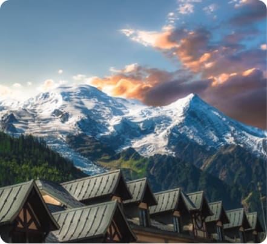

Popular destinations
Hello Switzerland!

Our Swiss adventure story
Location location location! Zermatt Switzerland offers majestic landscapes that cannot be seen elsewhere. The Matterhorn for example. This peak is a sight to behold and seeing it upclose is more magical that we’ve ever imagined. Want to enjoy a nice and cozy swiss breakfast? Well, Zermatt will never fail you.



One of the best hikes we’ve done so far…
As one of the alpine countries, landlocked Switzerland with her mountains has to compete not only with her neighbours but with other destinations. There are, e.g., no coastal resorts. The advantage is that tourism in Switzerland benefits of a large diversity of beautiful landscapes in a relatively small space.
View full gallery